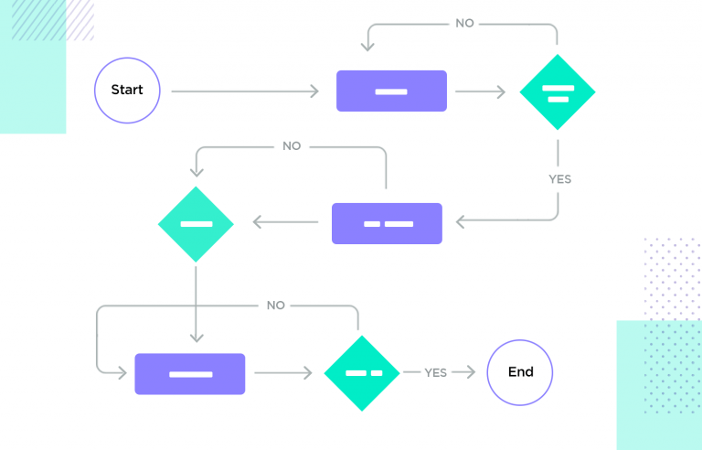
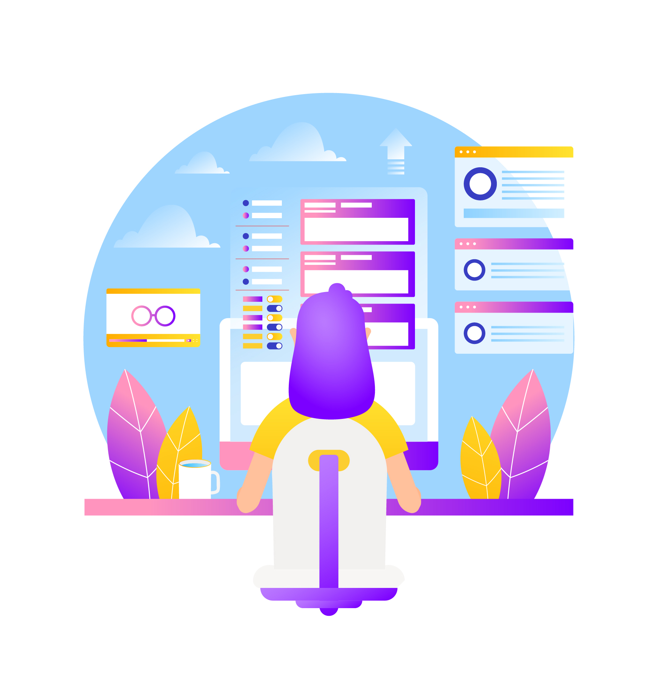

Crafting Experiences
Unveiling the Artistry Behind Design
Download Resume
Lets connect

Send me an email
I am
Frontend Designer
UI/UX Designer
Graphic Designer
with expertise in creating exceptional designs that captivate and engage users. With a keen eye for detail and a deep understanding of us er-centered design principles, delivering intuitive interfaces that seamlessly blend functionality and aesthetics. My passion is crafting visually stunning graphics and layouts following latest trend and technologies.
Web Design
Mobile App Design
Responsive Design
User Experience (UX)
User Interface (UI)
Visual Design
Wireframing
Prototying
UX Researcher
Figma
Adobe XD
Social Media Design
HTML/CSS
SCSS
React JS
Angular JS
Bootstrap
Material Design
Tailwind CSS
Photoshop
Illustrator
Office Suites
Microsoft Suites
Powerpoint Designs
User Persona ?
A user persona is a fictional representation of a target user, incorporating demographic details, behaviors, goals, and challenges. It helps teams better understand and address user needs, guiding the design and development of products or services to be more user-centered.
-
Key elements of a user persona typically include:
- Demographic Information: Age, gender, occupation, education level, etc.
- Background: Details about the user's professional and personal life.
- Goals and Objectives: What the user is trying to achieve or solve with the product or service.
- Challenges and Pain Points: Obstacles or problems the user may face in their tasks or goals.
- Behaviors: Patterns of behavior, such as how they use technology, preferences, and habits.
- Motivations: What drives and motivates the user to take certain actions.
- Needs and Expectations: Requirements and expectations the user has for a product or service.
User Flow
User Flow refers to the series of steps a user takes to accomplish a specific task within a digital product or service. It outlines the path a user follows from the initial interaction through the completion of their goal.
-
Key elements of a user flow typically include:
- Entry Point: Where the user starts the interaction.
- Actions and Decisions: The specific steps and decisions the user makes to achieve their goal.
- Branches: Different paths users might take based on their choices or interactions.
- Completion: The endpoint where the user successfully accomplishes their task.

Information Architecture
Information Architecture (IA) is a discipline within user experience (UX) design that focuses on the organization, structure, and labeling of information within a digital product or system. The goal of information architecture is to create an intuitive and user-friendly structure that allows users to easily find and understand information.
-
Key components of information architecture include:
- Organization: Arranging and categorizing content and features in a logical and meaningful way.
- Navigation: Designing the pathways users will take to move through the information or complete tasks.
- Labeling: Creating clear and descriptive labels for navigation elements, buttons, and content to aid user understanding.
- Searchability: Ensuring that users can easily search for and find the information they need.
- Hierarchy: Establishing a hierarchy of information to prioritize and present content in a structured manner.

User Journey
A user journey, also known as a customer journey, is the complete experience a user has while interacting with a product, service, or brand. It encompasses all the touchpoints and interactions a user goes through from the initial awareness stage to the eventual completion of their goal or task. Understanding the user journey is essential in designing and improving user experiences.
Mapping the user journey helps identify pain points, opportunities for improvement, and areas where users may need support. It allows designers and marketers to create a more holistic and user-centered experience, ultimately enhancing customer satisfaction and loyalty.
 Copyright © 2023 Manoj Adhikari. All rights reserved.
Copyright © 2023 Manoj Adhikari. All rights reserved.